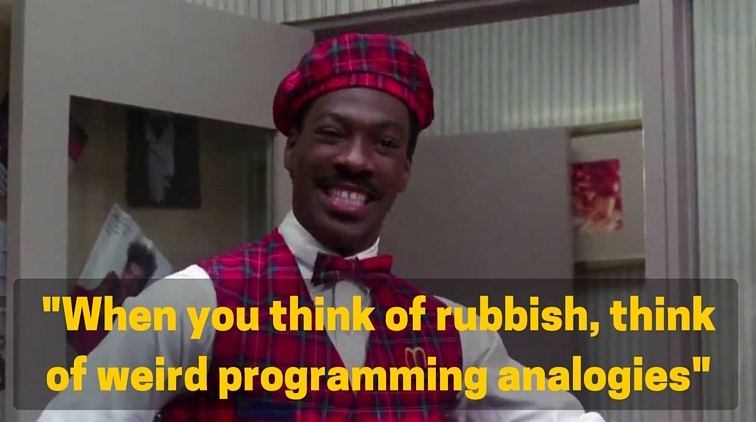
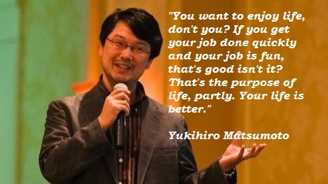
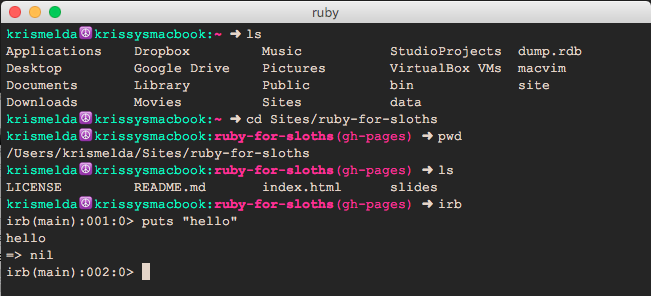
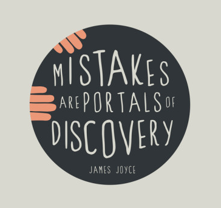
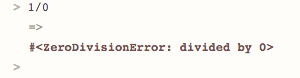
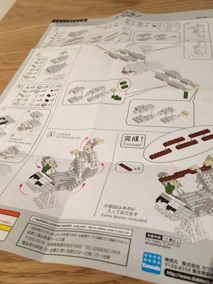
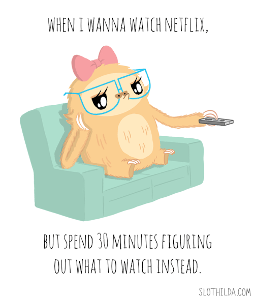

workshop by kriselda rabino
tweet me: @krissygoround
This slide deck is made with open source code thanks to the awesome folk at revealJS.
▼ (scroll down)
Hi! I'm Kriselda or Krissy or That Strange Lady Hovering Around the Food Table.
Let's hear a little about you!
▼ (scroll down)
Programming languages - like Ruby, Python or PHP - help humans and machines communicate with each other.
They can be used to write programs which solve problems, make cool things (e.g. websites or gadgets) or email everyone daily sloth GIFs.
Computers are not as smart as humans (yet!), so in order to communicate with them we need to keep things straight forward and obvious, like a recipe book or instruction manual.
It's sort of like when your parents, spouse or flatmate ask you to "help around the house" - what does that even mean?
We really only understand once they're standing right in front of us an hour later, hands on hips, saying:
"This bag of rubbish. You. Take it outside!".
(Am I right or am I right?)
Ruby was created by a Japanese guy called Yukihiro Matsumoto. A guy so cool we all know him as "Matz". His aim is to provide a beautiful, readable language that makes programmers happy.
It looks like this:
# Some code that will help us say hello when we call it
def say_hello(name, creature)
if creature == :sloth
puts "Helloooo #{name}"
else
puts "Hello #{name}"
end
end
# Now we can print "Hello Craig"
say_hello("Craig", :human)
# Or we can print "Helloooo Craig" (like a sloth!)
say_hello("Craig", :sloth)
| It's used on the back-end | Alongside a server and/or database, as opposed to "front-end" browser-based languages like HTML, CSS and JavaScript. |
| It's a high-level language | Humans can read it good. |
| It's object-oriented | Everything is an object. We'll go over this in a bit. |
| It's dynamic and strongly typed | This refers to how we create things and make different types of things talk to each other. We won't have time to go over this but if you're curious, google the difference between Static v Dynamic and Strong v Weak languages later on. |
| It's super flexible | Compared to other languages. Like marmite - people either love or hate this. |
This is a very common misconception when first exploring the Ruby world.
An important thing to note about programming is a lot of people face the same problems every day, so programs have been built to help each other achieve these common tasks.
Rails is a popular web framework made using the Ruby language. It provides the essential building blocks to create a modern web application.
Some popular sites built with Rails include Github, Airbnb and SoundCloud!
As above, a good programmer avoids reinventing the wheel.
Ruby devs can choose to share their programs with the open source community by packaging up their programs into little reusable libraries called "gems". These can be installed by anyone to use on their machines or in their own programs.
You can search for gems (including our friend, Rails) up on the gem hosting service RubyGems.
▼ (scroll down)
Good news! We won't need to fiddle around too much with setup for this workshop and we'll be using the handy website tryruby.org to play around. For reference, let's quickly go over what you'd usually need to start coding with Ruby.
There are different ways to install Ruby depending on your machine. If you're on a Mac, it comes with Ruby pre-installed, however, this is usually an older version and you're better off installing it fresh anyway. You can find out how to install Ruby via the official site.
Say hi to your new minimalistic home: The Command Line! Remember, anything new always feels alien but you'll soon be using this enough for it to feel totally natural. Mac users can access this via their Terminal app. Windows users via the Command Prompt. Here's a nice guide to brush up your command line skills in your own time.
irb
# Some maths. (Free calculator? Score!)
# Any line starting with a # is a comment btw.
# This is for humans only, which means you can pretty
# much type anything you want. Like "SLOTH".
2 * 5
=> 10
30 / 3
=> 10
32.even?
=> true
32.odd?
=> false
>
# Some words?
>
"hi, Krissy"
=> "hi, krissy"
'Krissy' * 3
=> 'KrissyKrissyKrissy'
"Krissy".upcase
=> "KRISSY"
krissy
=> irb(main):001:0> krissy
NameError: undefined local variable or method `krissy' for main:Object
It can get a bit tedious sending one line of code each time in an IRB session. Once you have ruby installed, you can also save your code in any file with the .rb extension, navigate to its containing folder in your command prompt/terminal and type ruby {filename} to run it. E.g. ruby sloth.rb.
A nice chair, working stationery, a desk cactus - we all work better in the right environment with the essential tools around us.
Installing a good plain text editor is essential to kickstart your coding projects, ensuring no funny characters sneak into your files, helping you out by highlighting your code, auto-completion and much more.
There are many syntax editors out there but here are a few to get you started: Sublime Text, Atom, TextMate or Vim (for the real hackers).
▼ (scroll down)
If you're going to enjoy your coding journey, you need to accept that things will go wrong about 90% of the time before they go right. It's normal and it's totally OK.
If you were being adventurous, you probably saw something like this gobbledy gook come up in your interactive ruby session:
These messages are called "Exceptions". Exceptions are Ruby's way of letting you know something's not right and where the problem might lie.
Usually the exception will point to the line it doesn't quite get which is very helpful when your codebase starts to get large!
They may look intimidating, but the fact is: Exceptions are your new BFFs!
(Those brutally honest kinds of friends that tell you you've got food in your teeth, and point to the exact tooth.)
Welcome their advice. They're here to help you out.
▼ (scroll down)
Here's some code. Don't worry, it's as scared of you as you are of it! ;) Spend the next 10 minutes typing it up in your code editor (resist the urge to copy and paste) in a file called sloth.rb, saved in a directory of your choice. No need to type the comments (they're for you!). If you have ruby set up, type ruby sloth.rb on the command line to run it. If you don't have ruby installed yet, copy it to tryruby.org to run it.
# 1. Let's make some classes! Starting with the generic Animal class
class Animal
def animal?
true
end
def eat
"Time to eat!"
end
def run
"Time to run!"
end
end
# 2. Now let's make a Sloth class, which is a type of Animal
class Sloth < Animal
# Attribute accessors are a quick way to create methods that read or set a value
attr_accessor :name, :fur_colour
# Let's set our initial values
def initialize(name)
@name = name
@number_of_limbs = 4
@fur_colour = "grey"
end
# This will override the run method in our Animal class
def run
"I know I have #{@number_of_limbs} limbs, but I don't know how to do that!"
end
end
# 3. Cool! Now we have our classes, let's make a real sloth instance!
craig = Sloth.new("Craig Slothy McSlothFace")
# -- Now let's find out some things about Craig:
# -- Print "My sloth's name is Craig Slothy McSlothFace"
puts "My sloth's name is #{craig.name}"
# -- Print "Is he an animal? true"
puts "Is he an animal?: " + craig.animal?.to_s
# -- Print "Time to eat!"
puts craig.eat
# -- Print "I know I have 4 limbs, but I don't know how to do that!"
puts craig.run
# -- Print "Craig's fur colour is grey"
puts "Craig's fur colour is: #{craig.fur_colour}"
# 4. Now let's see what happens if we create a new Animal instance and call run
some_generic_animal = Animal.new
# -- Print "Time to run!"
puts some_generic_animal.run
(If you haven't heard of them, nanoblocks are like Lego but cooler... except for people with gigantic hands.)
In fact, he wasn't even Craig back then. He was just a generic set of instructions with a bunch of sloth-like specs.
So if we have these objects, which are basically nouns, what are the things they do (i.e. their verbs)?. The rubyverse calls these: Methods! You've been using methods heaps already, e.g. when you called "hello".reverse, reverse is a method available in the String object "hello". Let's create our own method now.
# Our method takes something called an "argument" in brackets, and uses
# that to get personal preferences from whoever/whatever called the method.
def greet_like_a_sloth(name)
puts "Hai #{name}, I'mmmm aaaaa slothhhhh"
end
# Now try call your method!
greet_like_a_sloth("Craig")
It can get very repetitive having to write the same thing over and over again. Luckily, code is very good at making our lives a little easier and lazier. Variables are like little PAs you can rely on to remember all the details for you.
# Let's play around with a sentence
"Haiiii, I'mmmm aaaa slothhhh".reverse
"Haiiii, I'mmmm aaaa slothhhh".upcase
# OK, I'm feeling a bit sick of typing now. Ooh, variable time!
greeting = "Haiiii, I'mmmm aaaa slothhhh"
greeting.reverse
greeting.upcase
# (Ah, so much better. I might as well go for a nap now.)
# It's easy to change your mind, so it's great you can tell your
# variable to remember something new as many times as you want.
# And it won't roll its eyes at you!
greeting = "Hai!"
puts greeting
greeting = "Hai again!"
puts greeting
You can find out what class or type any object is by calling the method .class on it.
Back in your IRB shell or tryruby.org, try enter the following and see what you get:
1.class
"Hello".class
"Hello".kind_of?(String)
1.kind_of?(Fixnum)
2.kind_of?(String)
▼ (scroll down)
So, you've already been playing with some of Ruby's built-in classes and handy tools. Here's a little overview of some common ones we'll use during this workshop.
Ruby can do handy stuff with numbers in the most obvious way. And knows some neat tricks too! Try some of these:
10.class # Fixnum (an integer)
10.5.class # Float (a decimal)
10 + 5 # Arithmetic
16 % 5 # Modulo / remainder
5**2 # To the power of
# You can use underscores to make long numbers easier to read.
# Ruby knows to ignore them. It's nice and intuitive like that.
1_000_000 + 10
(1..5).class # These are handy classes of their own called Ranges!
(1..5).include?(5)
(1..5).max
(1..5).min
10.5.to_i # Make a float an integer
10.odd? # Is this an odd number?
10.methods # Check out all the things we can call!
Strings are code-speak for any value that consists of text or characters. Ruby interprets anything in single or double quotes a string. Let's test this out!
# You can use single or double quotes for simple
# text phrases and no one will yell at you.
# (Just try your best to be consistent!)
"Hai, I'm Craig.".class
"42".class
puts "prints a string and a new line"
print "prints a string with no new line"
# A backslash "escapes" special characters, like this apostrophe
# so we don't get it mixed up with a closing quote
'Hai, I\'m Craig.'
# You have to use double quotes when Ruby needs to
# do something a bit clever
"Two plus one is #{2 + 1}"
# String arithmetic?
"2" + "1" # 21
"Connect" + "These" # ConnectThese
"Sloth" * 3 # SlothSlothSloth
"2" + 1 # Should raise a TypeError
"How long am I?".length
"Reverse me".reverse
"Make this all uppercase".upcase
"capitalize me".capitalize
Booleans are a way of checking if something is true or false. A simple but regularly needed check in the world of code.
true.class # TrueClass
false.class # FalseClass
# Common operators, all examples return true
5 == 5 # Equal to
5 != 10 # Not equal to
5 4 # Greater than
5 >= 5 # Greater than or equal to
4 < 5 # Less than
5 <= 5 # Less than or equal to
(1..10) === 5 # Does 5 fall in this range?
# Comparison (AND/OR), all examples return true
5 == 5 && 5 > 4 # AND, i.e. all are true
5 == 5 || 3 > 4 # OR, i.e. at least one is true
# Being negative, use an !
!(5 == 4) # True
# Methods ending in ? indicate a true/false answer
1.odd? # True
1.even? # False
Symbols are handy to use for text values that label or identify something and won't change. You can tell a difference between a String and a Symbol as it's prefixed with a colon.
:sloth.class
:sloth.capitalize
:sloth.to_s # convert it to a String
Sometimes it's not all about sloths (really?!) and you need to deal with a bunch of other things too. This is where Collections come in. One common type is an Array, which is an ordered list of things. Let's get listing!
> ["sloth", "bear", "octopus"].class
# Numbers
[1, 2, 3, 4, 5]
(1..5).to_a # Convert this range to an array
# Strings
["sloth", "bear", "octopus"]
%w(sloth bear octopus)
"I am a string".split
# Symbols
[:sloth, :bear, :octopus]
%i(sloth bear octopus)
# Reading stuff
[:sloth, :bear, :octopus] # Check the first thing in the array
[:sloth, :bear, :octopus].first
[:sloth, :bear, :octopus][1] # Check the second thing
[:sloth, :bear, :octopus][-1] # Check the last thing
# Adding stuff (push!)
[:sloth, :bear, :octopus].push(:penguin)
[:sloth, :bear, :octopus] << :penguin
# Removing stuff (pop!)
[:sloth, :bear, :octopus].pop(:octopus)
# Printing an array as a String, use join
puts ["I", "am", "a", "sloth"].join(" ") # I am a sloth
puts ["I", "am", "a", "sloth"].join("-") # I-am-a-sloth
# Other things
[].empty?
[:sloth, :bear, :octopus].length
[:sloth, :bear, :octopus].shuffle
▼ (scroll down)
Life is full of hard decisions, some harder than others like whether you feel like pizza or noodles tonight. In this respect, programming is exactly like life.
When we make decisions, our new Boolean friends steal the show. They're used in conjunction with things called if/else statements and other neat little decision-making tools.
# Let's update our greet method from earlier to be more decisive.
def greet_like_an_animal(name, animal)
if animal == :sloth
puts "Hai #{name}, I'mmmm aaaaa slothhhhh"
elsif animal == :octopus
puts "Hai #{name}, I'm (bubble) a (bubble) octopus!"
else
puts "Hai #{name}, I'm a #{animal.to_s}"
end
end
# Now try call your method!
greet_like_an_animal("Craig", :sloth)
greet_like_an_animal("Craig", :octopus)
greet_like_an_animal("Craig", :bear)
# Some other checks
# Unless
puts "Hello" unless 1 == 1 # This will return 'nil' which is ruby's version of nothingness
▼ (scroll down)
Back to loving the lazy life- code makes our days so much easier by doing all our repetitive tasks for us. Thanks to our little syntax servants, we can do a bazillion things in one or a couple of lines. Yay!
So imagine we were really obsessed with someone, or a specific kind of slow creature, and we wanted to let them know with a hundred declarations of love.
puts "1. I really, really like you. Be mine?"
puts "2. I really, really like you. Be mine?"
puts "3. I really, really like you. Be mine?"
# Ok, that's getting tiresome... how about a for loop?
for count in 1..100 do
puts count.to_s + ". I really, really like you. Be mine?"
end
# Smooth. We could also write these like so:
100.times do |count|
count = count + 1
puts count.to_s + ". I really, really like you. Be mine?"
end
# Or like:
1.upto(100){ |count| puts count.to_s + ". I really, really like you. Be mine?" }
# Or even:
count = 0
while count < 100
count += 1 # shortcut way of saying count = count + 1
puts count.to_s + ". I really, really like you. Be mine?"
end
As you can see, there are many ways to do the same thing. Rubyists tend to use some ways more than others. A popular looping method is calling each or map on a collection (some useful methods from a nifty class called Enumerable)
awesome_animals = ["sloth", "dugong", "koala"]
# Use the each method to do something with each element in the array
awesome_animals.each do |animal|
puts "#{animal}s rock!"
end
# Use the map method to change all elements in an array
loud_animals = awesome_animals.map do |animal|
animal.upcase
end
# Use the join method to turn the array back into a string separated with spaces
# Prints: "Some loud animals: SLOTH DUGONG KOALA"
puts "Some loud animals: " + loud_animals.join(" ")
▼ (scroll down)
speak or something you feel fits, that prints out "Oh hai world" when you call it.animal"Bear: Oh hai world!"
How'd you go? Go back to the previous slide or ask a friendly helper if you've got brain burn. Once you've attempted it, hit the down arrow key to check your answer:
# My method
def speak(animal)
puts "#{animal.capitalize}: Oh hai world!"
end
# Print "Bear: Oh hai world!"
speak("bear")
Bear: Oh hai world Sloth: Oh hai world Fish: Oh hai world
if/else) so it prints out "Ohhhh haiiii worldddd" if the animal is a slothMoar confusez? Again, go back to the previous slides on arrays, conditional statements and loops or ask a friendly helper for assistance. Once you've attempted it, hit the down arrow key to check your answer:
# My method
def speak(animals)
animals.each do |animal|
if (animal == "sloth")
puts "#{animal.capitalize}: Ohhhh haiiii worldddd!"
else
puts "#{animal.capitalize}: Oh hai world!"
end
end
end
# Print:
# Bear: Oh hai world!
# Sloth: Ohhhh haiiii worldddd!
# Fish: Oh hai world!
awesome_animals = ["bear", "sloth", "fish"]
speak(awesome_animals)
"Sloth: Rubyyyy issss neatttt"(Hint: There are several things to think about here - break the problem down into single steps. Firstly, how would you split a sentence up into a group of words? Then how do you something to change each word? How do you extend the word? Use the slides, Google or a friendly fellow human to help you out if you're stuck!)
This one was quite tricky so congrats if you've made it this far! Once you've attempted it, hit the down arrow key to check your answer:
# My helper method
def make_slothy_sentence(sentence)
# Turn the sentence string into an array using split
# Use the map method to transform each array element
# Remember the last element can be accessed by the array[-1] method
# Use the * operator to multiply the last letter by 3
# Finally use array.join() to turn the sentence back into a string
sentence.split.map do |word|
last_letter = word[-1]
word + last_letter*3
end.join(" ")
end
# My main method
def speak(animals, sentence)
animals.each do |animal|
if animal == "sloth"
puts animal.capitalize + ": " + make_slothy_sentence(sentence)
else
puts animal.capitalize + ": " + sentence
end
end
end
# Print:
# Bear: You're a coding machine
# Sloth: You'reeee aaaa codingggg machineeee
# Fish: You're a coding machine
awesome_animals = ["bear", "sloth", "fish"]
speak(awesome_animals, "You're a coding machine")
▼ (scroll down)
We've covered a bunch of topics, and even if you're still scratching your head about a lot of it, the point of this session is to get a taster for coding and understand it's not rocket science (most of the time) but a lot more about solving puzzles, organizing yourself and making an infinite world of ideas come to life.
Most importantly, learning to code is no longer just for "programmers". Tech is so prominent in our world it's valuable for us all to understand our environment and feel enabled rather than paralysed by it. You've just unlocked a new life skill - well done!
The best thing about learning to code is the fast-growing amount of free resources and support you can find from tech communities both online and in your local area. People all learn differently, so explore your options (there are many!) and find what works for you.
If you have any questions about ruby/coding, working in tech, sloths or anything else, please throw them my way.
email me: kriselda.rabino@gmail.com
tweet me: @krissygoround